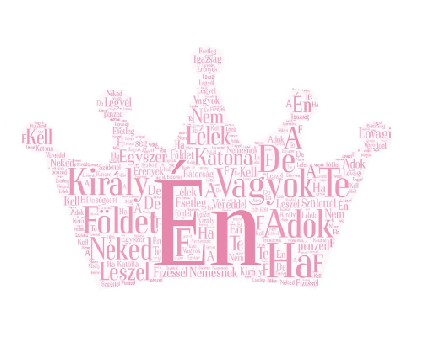

Versek
Digitálsi témahétre
Komplesz Természettudomány
Védd a fákat fontosak
sok oxigént ontanak.
Ne irtsd ki, mert vétek a
többszáz éves kérget.
Nem lesz többé levegő
ez pusztuláshoz vezető!

Történelem
Én vagyok a király és földet adok néked,
ha katona leszel te egyszerű lélek.
De ha te esetleg nemesnek születtél
nem kell a pénzed a véreddel fizessél!
Lovagi erények hűség és bátorság
legyél hűséges fő az igazság!
Matematika
Függvény lenne az életem?
Ezt kimondani nem merem!
Szívesen jutnék a végtelenbe,
de most inkább nézek a függvényembe.
Látom az életem metszéspontját,
negatívból pozitívra fordul át.
Néha a hangulatom közel a zéróhoz,
de a legjobbkor fordul a pozitív maximumhoz.
Így olvad a függvény az életembe,
biztos lesz még ilyen
tán legközelebb ma este.
Angol
My parents sent me to the store
to buy a chicken
I came home with a chicks
and a chips instead.
I came home with a pig,
a bear and a piglet,
a bee and a monkey
and a friendly little donkey.
I also had a sheep
and a crab and a deer
My parents never let me
do the shopping anymore.
Digitális kúltura
Lehunyja két szemét az ég,
lehunyja sok szemét a ház
dunna alatt alszik a rét
aludj el szépen, kis Balázs.
Lábára lehajtja fejét,
alszik a bogár, a darázs,
vele alszik a zümmögés
aludj el szépen, kis Balázs.
A villamos is aluszik,
s mig szendereg a robogás
álmában csönget egy picit
aludj el szépen, kis Balázs
Alszik a széken a kabát,
szunnyadozik a szakadás,
máma már nem hasad tovább
aludj el szépen, kis Balázs
Szundít a lapda, meg a sip,
az erdő, a kirándulás,
a jó cukor is aluszik
aludj el szépen, kis Balázs
A távolságot, mint üveg
golyót, megkapod óriási
leszel, csak hunyd le kis szemed,
aludj el szépen kis Balázs.
Tüzoltó leszel s katona!
Vadakat terelő juhász!
Látod, elalszik anyuka.
Aludj el szépen, kis Balázs
Irodalom
Állt az anya keservében
sírva a kereszt tövében,
melyen függött szent Fia,
kinek megtört s jajjal-tellett
lelkét kemény kardnak kellett
kínzón általjárnia.
Óh mily búsan, sujtva állt ott
amaz asszonyok-közt-áldott,
ki Téged szült, Egyszülött!
Mily nagy gyásza volt sírása
mikor látta szent Fiát a
szívtépő kinok között!
Van-e oly szem, mely nem sírna
Krisztus anyjával s e kínra
hidegen pillantana?
aki könnyek nélkül nézze,
hogy merül a szenvedésbe
fia mellett az anya?
Látta Jézust, hogy fajtája
vétkéért mit vett magára
és korbáccsal vereték.
S látta édes fiát végül
haldokolni vigasz nélkül,
míg kiadta életét.